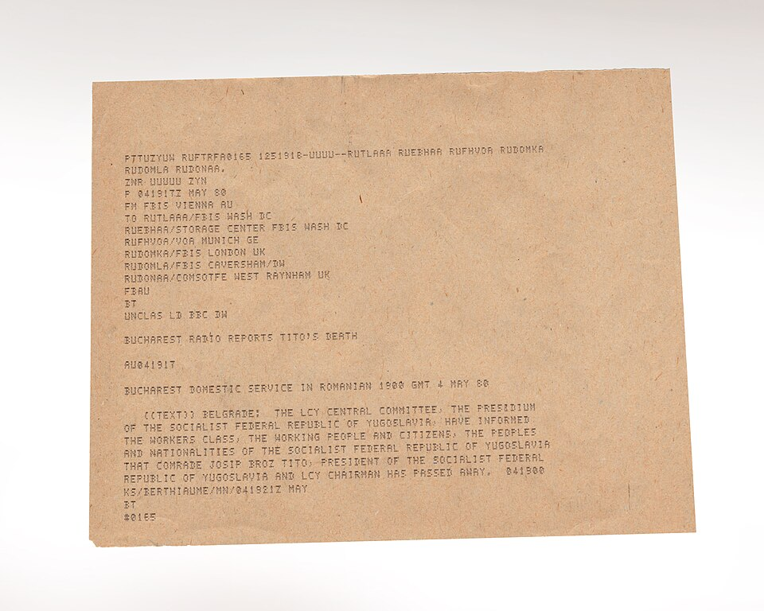

FBIS This Day · about
About FBIS This Day
A day-by-day way into the Daily Reports of the Foreign Broadcast Information Service, with the emphasis on spycraft and the crises of the late Cold War.
The project
For most of the Cold War the U.S. government listened to the world's radio, television, news agencies and press in their own languages and published what it heard, in English, as the FBIS Daily Report. Each issue is a record of what governments were telling their own people, and each other, on that day.
This site picks one event for every day of the year, shows the Daily Report that carried it, and explains why it mattered to the United States and to world events at the time. The focus is spycraft (espionage, defections, covert action and the intelligence services), then the wars, coups and crises that the monitors followed. The home page moves to the next day at midnight, by the visitor's own clock.
Built for Democracy's Library at the Internet Archive. For FBIS's history and everything else that survives of its record, see the FBIS explorer in Wayback Machine Labs.



Source of materials
Every report comes from the United States Foreign Broadcast Information Service (FBIS) collection at the Internet Archive, scanned from microfiche. Each entry links to the archive.org item and to the page where the event appears.
The collection belongs to Democracy's Library by its scope: it sits in the Internet Archive's U.S. Government Documents collection.
Dates covered
The Daily Reports here run from January 3, 1978 to August 30, 1996. FBIS itself worked from 1941 to 2005; earlier and later issues are not in this collection, so events such as the Bay of Pigs (1961) or the Cuban Missile Crisis (1962) cannot appear here.
Topics and regions
| Series | Years in the collection |
|---|---|
| Soviet Union / Central Eurasia | 1978–1996 |
| East Europe | 1978–1996 |
| Middle East & North Africa; Near East & South Asia | 1978–1996 |
| Latin America | 1978–1996 |
| East Asia / Asia & Pacific | 1990–1996 |
| Sub-Saharan Africa | 1978 only, in practice |
| China; West Europe | a handful of issues |
Because China, Western Europe and Africa are barely present, events there appear through how Moscow, Eastern Europe, the Middle East or Latin America reported them.
When the numbers were taken
The collection held 22,903 items on November 6, 2026, 21,850 of them with a date (a search for collection:us-fbis).
What is left out
- FBIS material outside the
us-fbiscollection: the JPRS translations, the CIA Reading Room's FBIS memos and cables, and the later World News Connection. The FBIS explorer covers those. - Undated items (about 1,050), which cannot be placed on a day.
- No Daily Report is dated July 4, November 11 or December 25. Those days still have an entry: the event fell on that date, and the report that carried it came out a day or two later.
How each entry is made
A script confirmed that each entry's Daily Report carries the event. The page where it appears is linked and quoted.
Images
All images are public domain, from Wikimedia Commons, and are kept in this site's own files.
- FBIS emblem: Foreign Broadcast Information Service logo.
- Listening post: Lewis Walker, Laurel, Maryland. Monitoring at the United States Federal Communications Commission listening post, Library of Congress Prints and Photographs Division.
- Teletype message: Central Intelligence Agency, FBIS Text Message Announcing Yugoslavian President Tito's Death.
- Monitoring equipment: U.S. government photograph, Foreign Broadcast Information Service equipment 1945.

How it was built
A Python script indexes the collection from archive.org's search API; another checks each entry against the OCR text archive.org publishes for every item; a third writes one small data file per day. The page is plain HTML and JavaScript. The code is on GitHub.
Questions or suggestions? Email us.
Made by Robin Fay, Democracy's Library, Internet Archive.